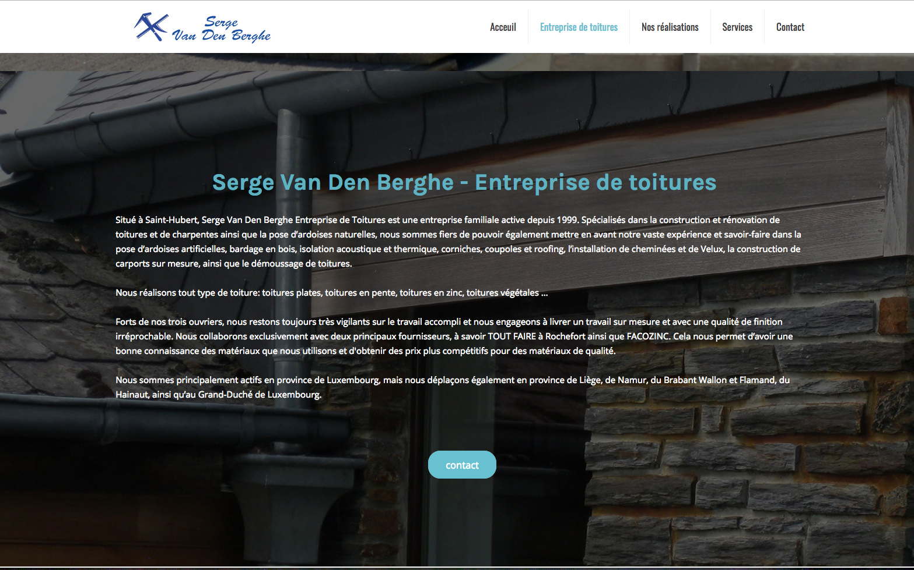
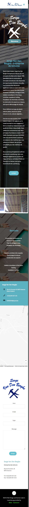

Serge von den Berghe
- 
- 

Eine Wordpress-Webseite für einen belgischen Dachdecker. Die Texte und Fotos der Baustellen hat er selbst geliefert, die Stockfotos und die Gestaltung entstammt mir.
Eine Wordpress-Webseite für einen belgischen Dachdecker. Die Texte und Fotos der Baustellen hat er selbst geliefert, die Stockfotos und die Gestaltung entstammt mir.